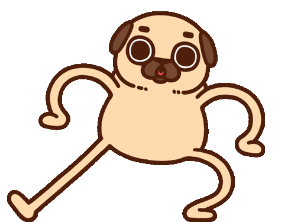

Para ti, mi reinita hermosa Jesabeth Jessica Soca Huillcas
He preparado algo especial para este San Valentín. ¡Voltea las cartas!
Lo que eres para mí
¡Eres la persona más especial del mundo!
Quisiera que sea eterno
Me encanta verte sonreír cada día
Recuérdalo siempre
Tu alegría ilumina mi vida
Y espero que vengan muchos más
Cada momento contigo es maravilloso
Te quiero hacer una pregunta
